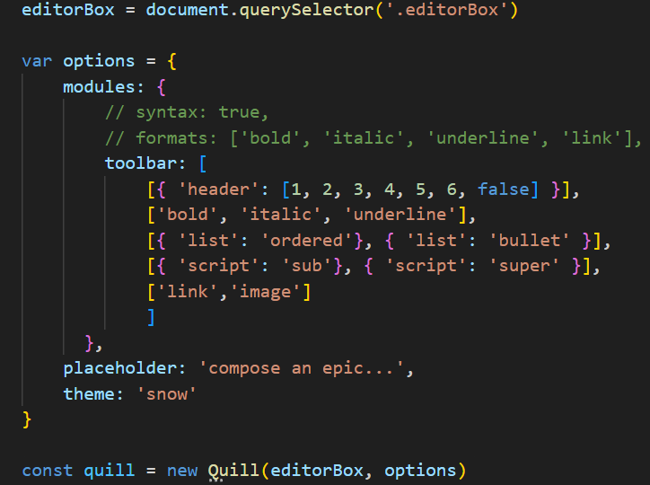
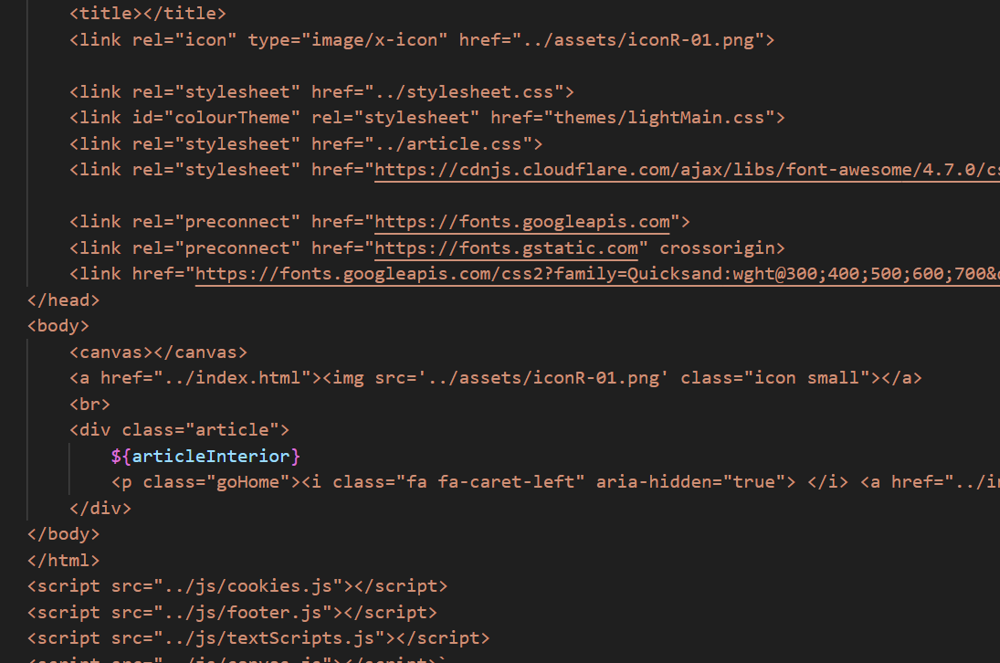

All of the pages at Jaimatthews.com/read — such as this one — are made using the Article Editor. When I made this version of the website, I set up a very simple CSS library (shown off here) that would allow me to write "articles" for my website in a simple, consistent, and on-brand manner. When it came to adding a written piece to the website, I'd just have to use the right tags and it would format itself correctly.
Truthfully, even this was more work that was practical and so I sought a way of making my process more efficient. Ideally, I could write articles, add the HTML file to my website, and not have to manually edit any HTML myself.
That is why I created my Article Editor, which I am using right now to write this very page (very meta!). There is no force on this earth powerful enough to make me make the kind of rich text editor that'd be necessary (god, that would be so fucking painful), so instead I sought an existing framework that I could incorporate into my website. With a bit of learning, and even more fiddling around, I managed to get the use the Quill API to embed a text editor into my website.
Surprisingly, this was most of what I needed to do. The text editor would now work and even puts the HTML of what you're typing directly into the page in a way that means my own JavaScript can interact with it.
Using this, I created a simple save function that would add the typed JavaScript to the necessary headers, footers, and included files/ styles and make a complete HTML page that can be added to my website.
Whilst it's primarily for me, you can access Article Editor here. Please note that the HTML file links to other JS and CSS files using relative links, so it will not render correctly unless it's uploaded to my website.